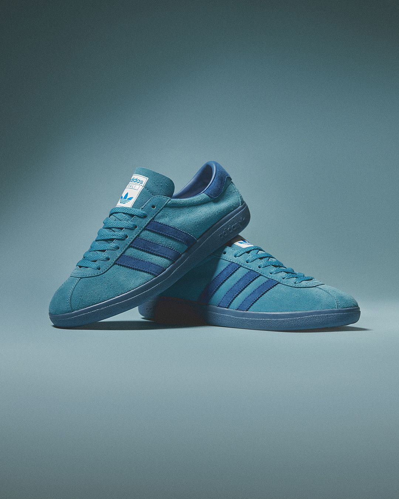
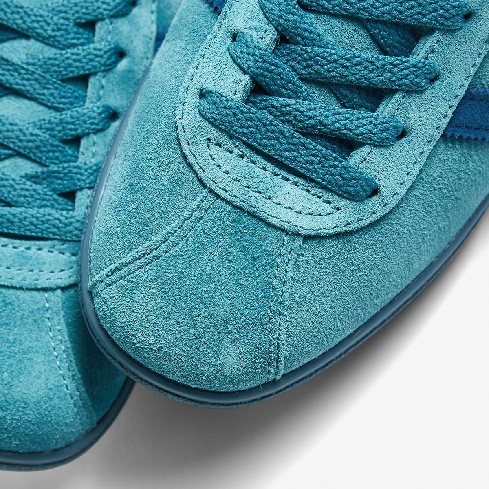
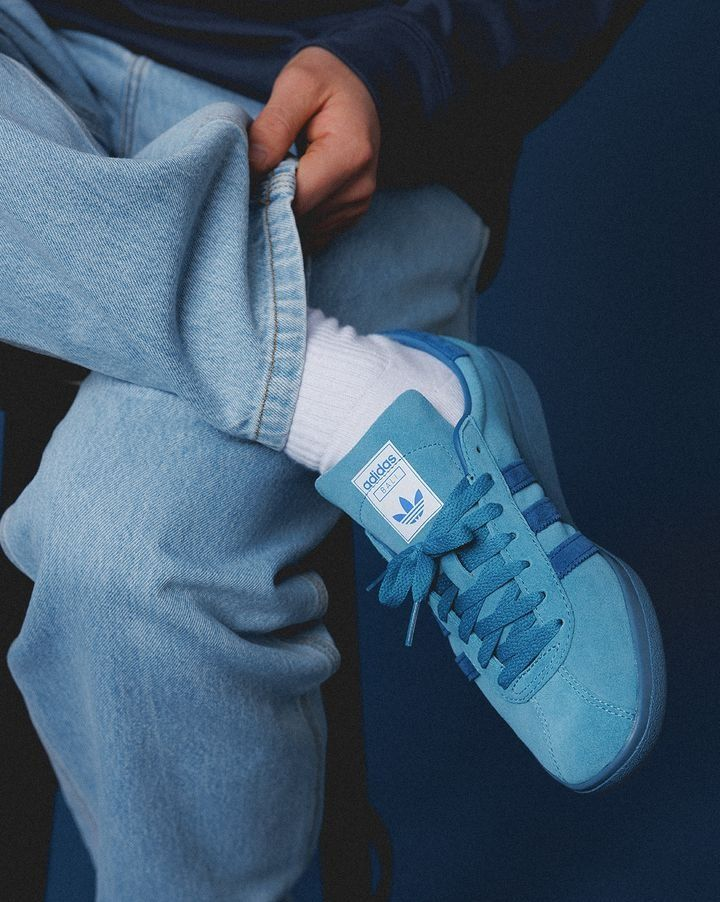
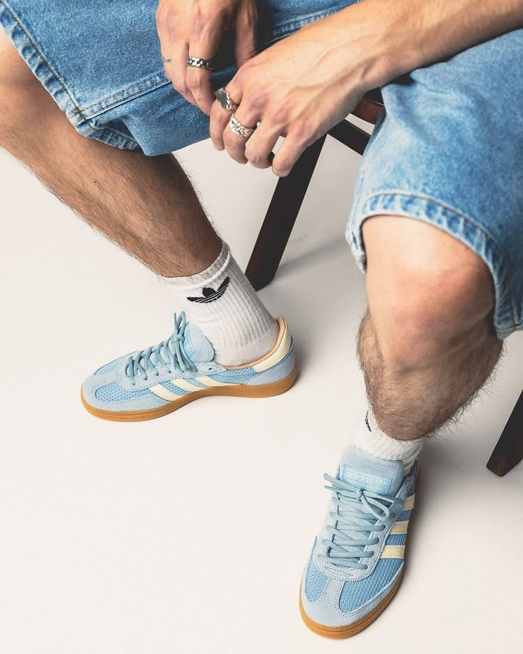
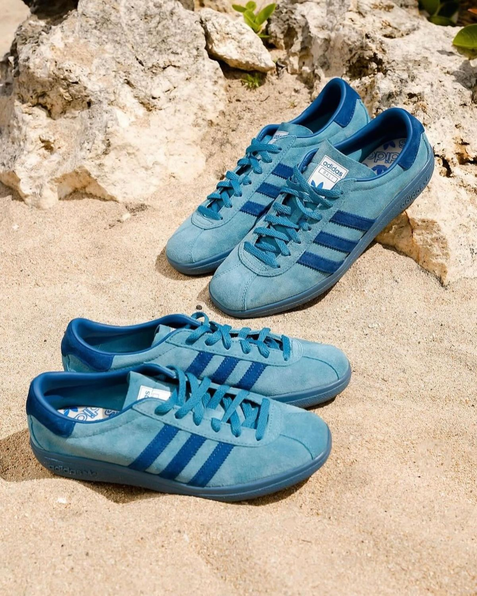
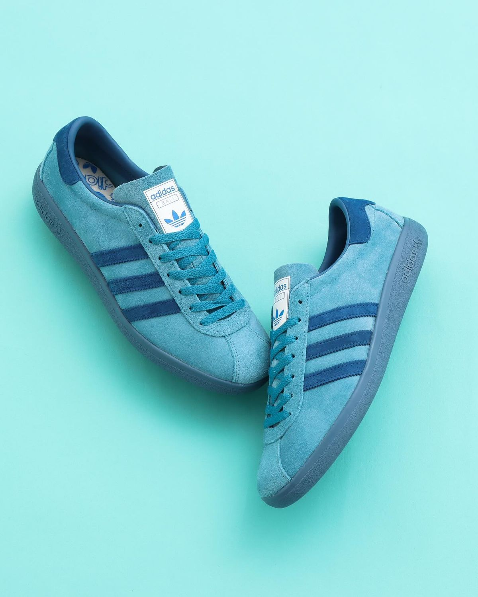
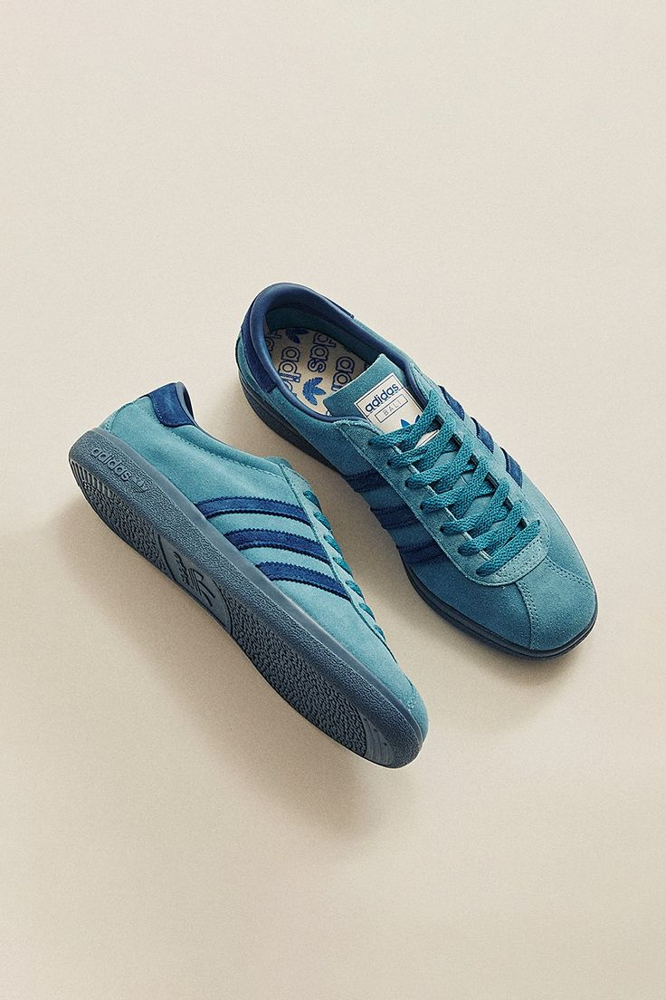

"Where the ocean meets the court"

The Adidas Bali is an iconic casual sneaker from the "Island Series", originally released in 1977 and re-issued in limited quantities. Its deep ocean blue colorway draws direct inspiration from the breathtaking waters surrounding the Island of Bali.
Crafted from premium suede with a textile lining and rubber outsole, every element of this shoe delivers an effortlessly casual yet unmistakably premium feel — making it one of the most sought-after pieces among sneaker collectors worldwide.
Each detail is meticulously considered — from the iconic three-stripe stitching to the special edition box that faithfully replicates the original 1977 packaging design.

A low-profile silhouette true to the trainer aesthetic of the 1970s. Premium suede upper with the iconic three stripes, and select pigskin leather accents that deliver an exceptionally smooth, refined texture.
Dominated by Tactile Steel and Dark Marine blue tones — a direct reflection of tropical island waters and open skies. The palette is calm, confident, and unmistakably oceanic.
Premium construction with a vulcanized rubber outsole, soft textile lining, and precision stitching throughout. Every pair undergoes strict quality control befitting a true collector's item.
Highly coveted in the limited-edition sneaker market. Restricted supply drives secondary market prices steadily upward — making the Bali not just a shoe, but a sound collector's investment.
Comes with an exclusive box faithfully replicating the original 1977 design. The vintage-inspired packaging enhances the authenticity and adds to the rarity that collectors prize above all else.
Originally produced in France, upholding the highest European craftsmanship traditions. Part of Adidas's exclusive series inspired by the world's most exotic and beautiful islands.





The Adidas Bali makes its debut as part of the exclusive "Island Series" — a collection of trainers inspired by the world's most exotic destinations. Produced in France to the highest standards of European craftsmanship, the shoe immediately captivated sneaker enthusiasts across the globe.
The Bali becomes a cult icon of European streetwear culture. Limited production runs make it increasingly rare, fueling demand on the secondary market and cementing its status as a must-have collector's piece.
The global sneaker community begins cataloguing and preserving vintage Adidas Bali pairs. Original deadstock specimens command extraordinary prices at international auctions, solidifying its legacy as a true grail sneaker.
Adidas re-releases the Bali in a special edition package that faithfully replicates the iconic 1977 presentation. Global enthusiasm proves the shoe's enduring legacy — selling out across all platforms within hours of launch.
| Brand | Adidas Originals |
| Model | Bali — Island Series |
| Release Year | 1977 (original) / 2024 (re-release) |
| Upper Material | Premium Suede / Pigskin Leather |
| Lining | Textile Lining |
| Outsole | Vulcanized Rubber |
| Colorway | Tactile Steel / Dark Marine Blue |
| Country of Origin | France (original edition) |
| Silhouette | Low-profile Vintage Trainer |
| Packaging | Special box replicating 1977 original design |
| Availability | Limited Edition — Extremely Limited Stock |
| Target Audience | Sneaker Collectors, Vintage Fashion Enthusiasts |
"Only the bold wear a piece of history on their feet."
Get Yours Now